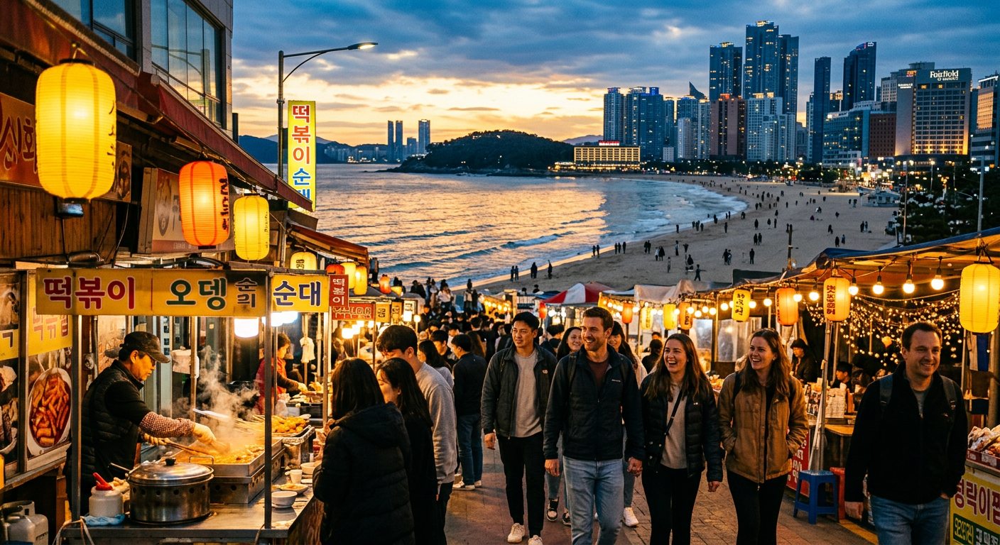
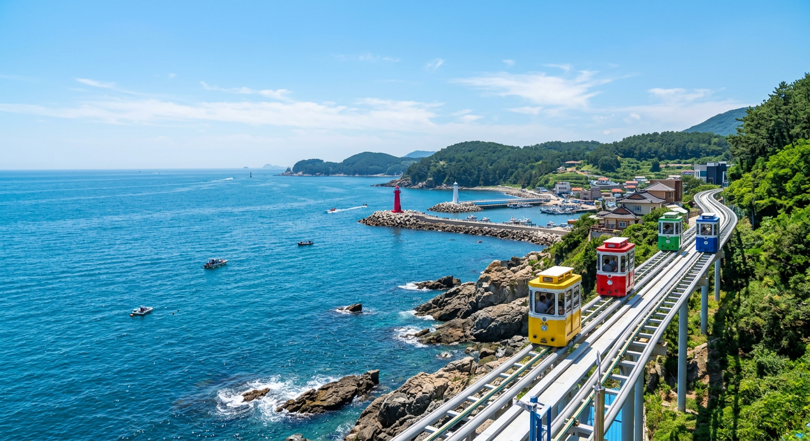
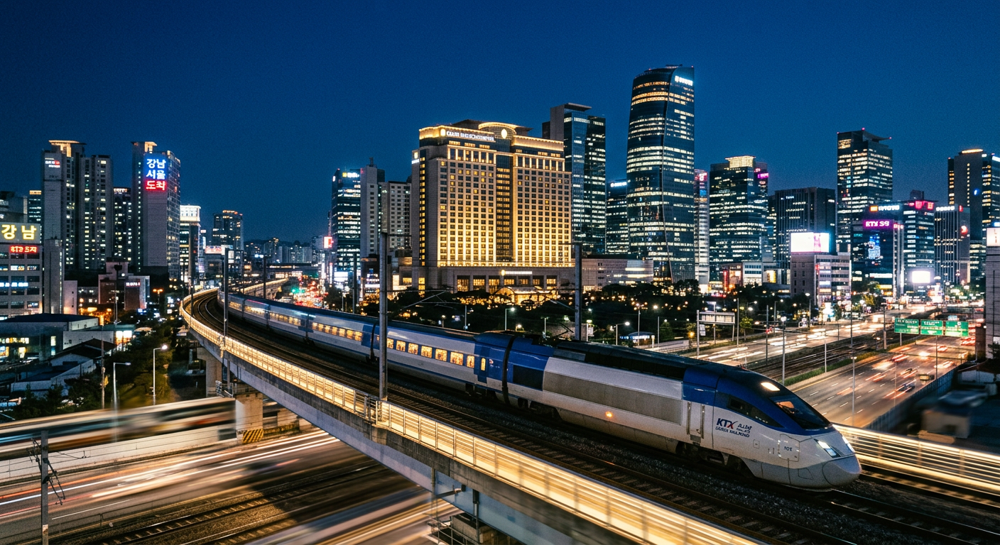
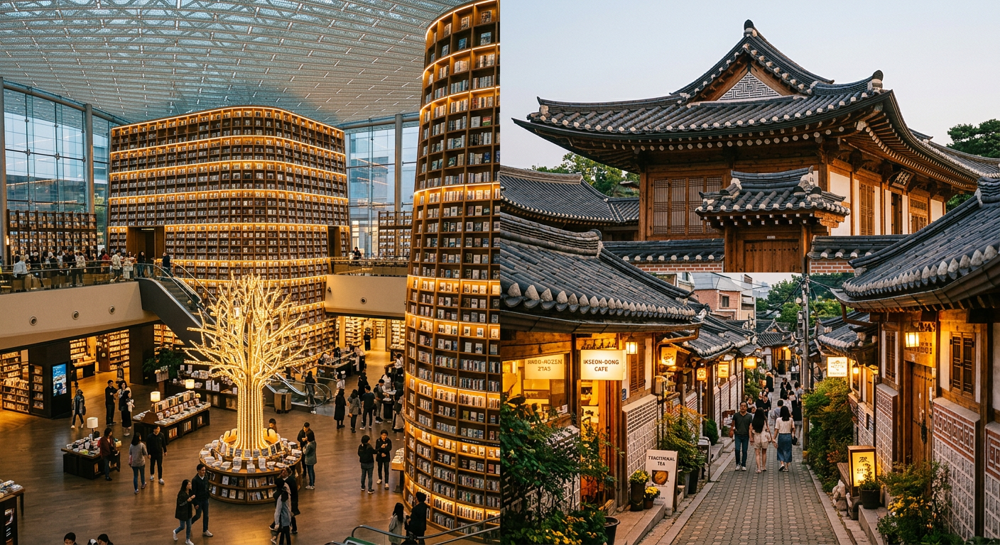
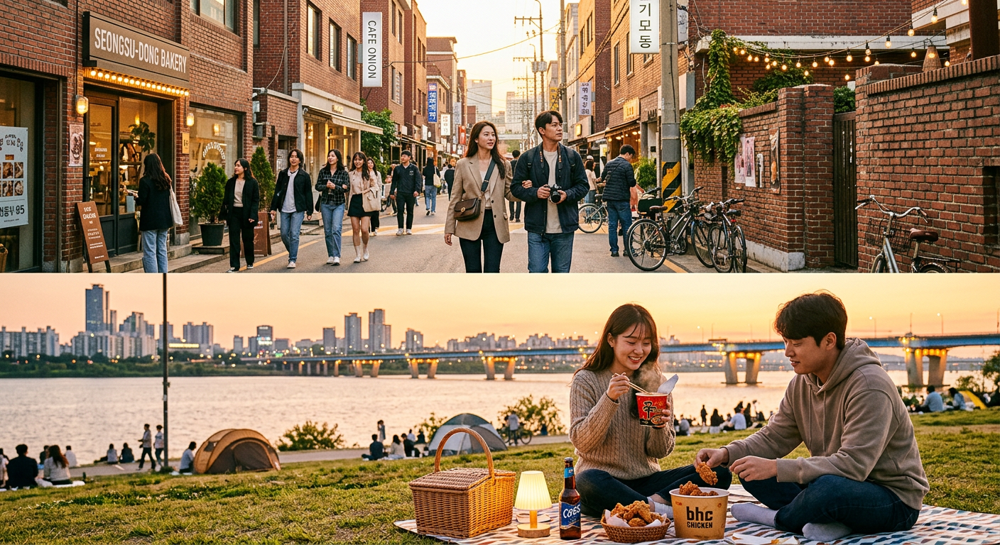
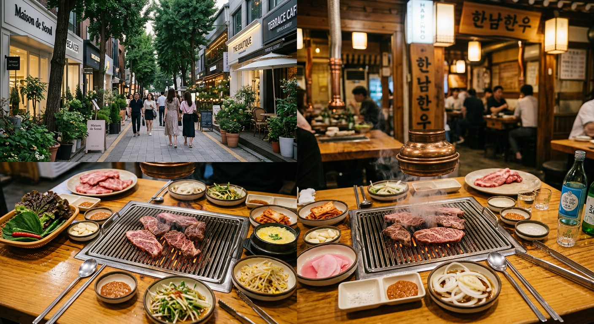
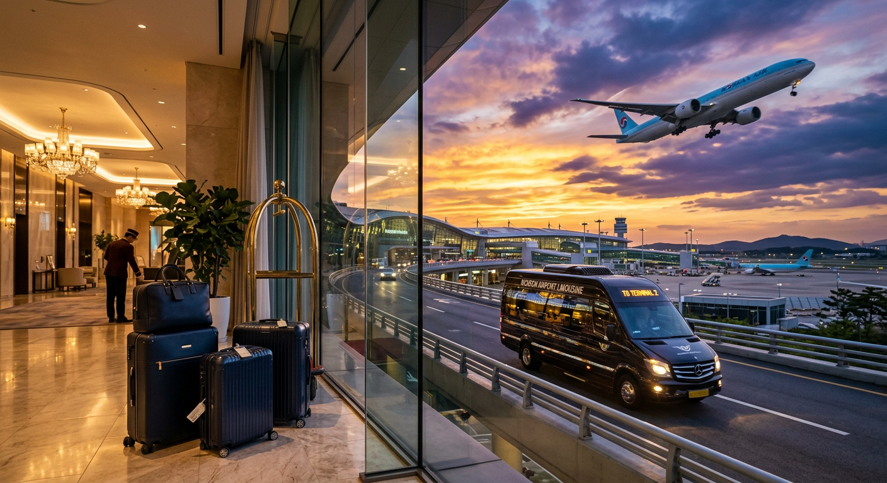

2026年9月25日 — 10月2日（国庆黄金周定制方案）。海云台晚风、全景天空胶囊、夜间KTX极速进京、江南帕纳斯洲际、首尔潮流探店与落地万怡从容躺平。
| 日期 | 路线 / 城市 | 行程核心亮点 | 当日住宿 | 核心大交通 & 时间节点 |
|---|---|---|---|---|
| 9.25 (D1) | 上海浦东 ➔ 釜山 | 抵达釜山、海云台海滩晚霞、传统市场夜市（烤盲鳗/糖饼） | 釜山海云台万枫酒店 | ✈ PVG T1 (13:35) ➔ PUS 国际 (16:50) 🚕 机场打车直达酒店约 45-50 分钟 |
| 9.26 (D2) | 釜山 | 海东龙宫寺、青沙浦海鲜、蓝线公园天空胶囊列车、广安里大桥夜景 | 釜山海云台万枫酒店 | 地铁 2 号线 / 观光胶囊小火车 / 出租车 |
| 9.27 (D3) | 釜山 | 甘川文化村（小王子）、白浅滩海岸悬崖咖啡街、扎嘎其海鲜市场 | 釜山海云台万枫酒店 | 出租车 / 地铁 1 号线 |
| 9.28 (D4) | 釜山 ➔ 首尔 | 釜山慢活（新世界 Spa Land 顶奢汗蒸 / 迎月路）、夜间 KTX 进京 | 首尔帕纳斯洲际酒店 | 🚄 KTX 釜山站 (20:40) ➔ 首尔站 (23:23) 🚕 深夜打车 20 分钟直达江南洲际（约 00:00 入住） |
| 9.29 (D5) | 首尔 | 洲际睡到自然醒、COEX 星空图书馆、昌德宫古典园林、益善洞韩屋、明洞 | 首尔帕纳斯洲际酒店 | 地铁 2 / 3 / 4 号线 / 步行 |
| 9.30 (D6) | 首尔 | 圣水洞工业风潮流探店、汝矣岛 The Hyundai 百货、汉江公园落日拉面野餐 | 首尔帕纳斯洲际酒店 | 地铁 2 / 5 号线 |
| 10.1 (D7) | 首尔 | 汉南洞设计师街区、延南洞森林步道、江南炭火高品质韩牛盛宴 | 首尔帕纳斯洲际酒店 | 地铁 6 / 2 号线 / 出租车 |
| 10.2 (D8) | 首尔 ➔ 郑州 | 现代百货免税补货、6103大巴直达仁川、夜飞抵郑入驻万怡 | 郑州航空港万怡酒店 | 🚌 洲际门前 6103 机场大巴直达仁川 T1（约 70 分） ✈ 仁川 T1 (约21:15起飞) ➔ 新郑 T2 (22:45降落) 🚕 落地打车 8 分钟直达万怡，半小时躺平 |
| 10.3-4 | 郑州港区 ➔ 市区 | 万怡睡到自然醒、整理战利品、犒劳中国胃、避峰从容返回市区 | 温馨的家 | 🚄 机场站城际高铁 16 分钟直达郑州东站 或 滴滴上机场高速 35 分钟直达市区 |

Day 1 · 启程抵韩
Day 2 · 山海绝景
Day 4 · 温泉转场
Day 5 · 古今交汇
Day 6 · 潮流先锋
Day 7 · 艺术生活
Day 8 · 从容归途在万怡睡到自然醒，享用自助早餐（万豪会员可申请延迟退房至 14:00）。悠闲拆箱整理韩国免税战利品，在周边吃一碗热腾腾的河南烩面安抚中国胃。若住 2 晚，10月3日下午还可去附近的杉杉奥莱散步。